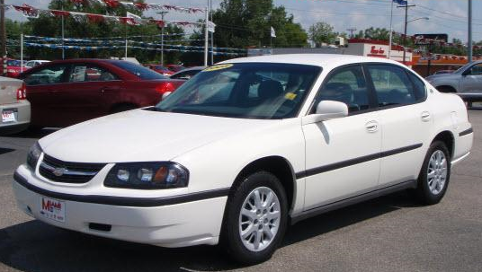

This was my very first car! Pretty nice eh? I have my Grandma Carol to thank for that. :) When she passed away and we sold her house, my dad had some extra cash to spend and was generous enough to buy me my very own car. I of course love it, but she does have her faults. Right after I got it, we had to replace the transmission, ouch! & then new tires, window wipers, etc. I got her right before spring break of my sophmore year, so I've had her a little over 2 years now. This past year has been a rough one for her, I tell you what! This past winter while working at Endless Summer, or maybe it was even a hoolagan from my school...anywho, somebody backed into her and scratched/dented her up real nice. That was about 2K in damages, thank God for insurance! & then to top it off, on April 20th I got into a car accident not even 10 minutes after I had left school, and about 2 minutes from being home! Some dumb broad came flyin down the road as I was slowing down for a car infront of me to turn, she tried to go around and ran another car off the road and swung back and hit me pretty dang hard and I hit my friend Zach's MUSTANG, infront of me....so I had front and rear end damage! Good thing it wasn't my fault....that was over 3K to fix all of that! She's been a great car though, lots of good times, and hopefully more to come!